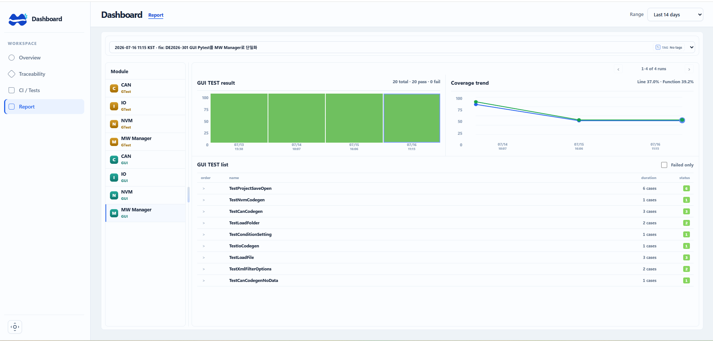

CI 배포 시 생성되는 리포트를 실행 이력, 모듈, 테스트 결과, coverage 추이 단위로 정리해 현재 품질 상태를 한 화면에서 확인하도록 구성했습니다.
MOBASE ASEC · CI / Test Report
CI 리포트 대시보드
Overview
Problem
배포마다 테스트 리포트가 쌓여도 결과 파일이 흩어져 있으면 실패 위치와 coverage 변화를 빠르게 파악하기 어렵습니다. 최근 실행과 모듈별 상태를 같은 기준으로 비교할 화면이 필요했습니다.
Approach
CI 실행 결과를 배포 단위로 묶고, 테스트 결과와 추이를 같은 탐색 흐름에 배치했습니다.
- CI 배포 시 생성된 리포트를 실행 시각과 변경 정보 기준으로 구분합니다.
- CAN·IO·NVM·MW Manager 등 모듈과 GTest·GUI 결과를 함께 탐색합니다.
- pass·fail 요약과 개별 테스트 목록을 연결해 실패 위치를 좁힙니다.
- line·function coverage와 최근 실행 추이를 비교해 품질 변화를 확인합니다.
Screen evidence
사용자가 제공한 화면을 바탕으로 공개 가능한 대시보드 구조만 설명합니다. 실제 저장소, 파이프라인 구성과 내부 기준값은 공개하지 않습니다.
